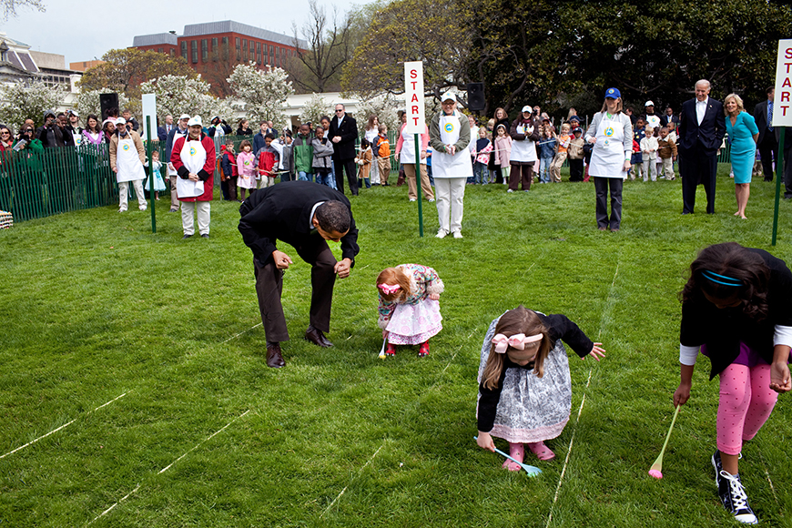

Nos Estados Unidos, a Páscoa é muito comemorada com atividades para crianças, como a famosa caça aos ovos.
O Easter Bunny é uma figura central da celebração, trazendo doces e chocolates.
Também acontecem eventos grandes, como a corrida de ovos na Casa Branca.

